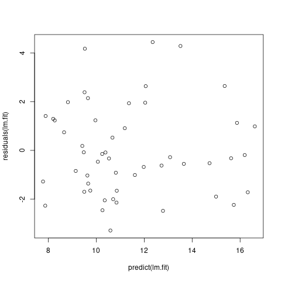
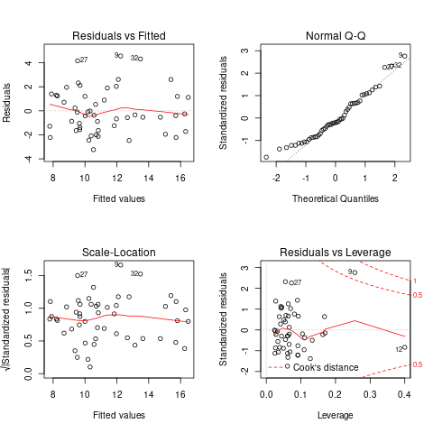
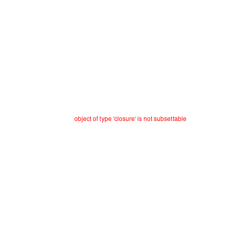

Некоторые хитрости в ML
Содержание
- 1. Линейная регрессия (простая):
- 2. Порядок использования линейной регрессии (простой):
- 3. Порядок использования multiple regression
- 4. Требования к данным для регрессионного анализа
- 5. Diagnostic plots in Python
- 6. Какие \(\alpha{}\) лучше использовать для Gradient Descent
- 7. Когда использовать градиентный спуск (Gradient Descent), а когда Метод Наименьших Квадратов (Normal Equation / Linear Least Squares)
- 8. Underfitting
- 9. Overfitting
- 10. Regularization
- 11. Confusion matrix
- 12. Что делать если линейная регрессия на новых тестовых данных даёт большую ошибку
- 12.1. Собрать больше данных для обучения модели. (не всегда помогает)
- 12.2. Уменьшить количество факторов (features)
- 12.3. Добавить факторы (features)
- 12.4. Добавить факторы больших порядков (x₁²,x₂²,x₁x₂,etc)
- 12.5. Уменьшить параметр регуляризации \(\lambda{}\)
- 12.6. Увеличить параметр регуляризации \(\lambda{}\)
1 Линейная регрессия (простая):
\(Ŷ = \beta{}_{0} + \beta{}_{1}*X\)
Где
\(\beta{}_{1} = \frac{sd_{x}}{sd_{y}} * r_{xy}\),
\(\beta{}_{0} = \hat{Y} - \beta_{1} * X\).
library(MASS) lm.fit <- lm(medv~lstat, data=Boston) plot(Boston$lstat, Boston$medv) abline(lm.fit, lwd=2, col="red")
library(MASS) lm.fit <- lm(medv~lstat+I(lstat^2), data=Boston) plot(Boston$lstat, Boston$medv) curve(predict(lm.fit, newdata=data.frame(lstat=x)), add=T, col="red", lwd=2)
2 Порядок использования линейной регрессии (простой):
- Построить scatter plot и посмотреть, что данные подчиняются линейному закону.
- Посчитать \(R^{2}\) и выяснить подчиняются ли данные линейной корреляции. \(R^{2}\) описывает какой процент данных (от 0 до 1) описывается линейной регрессией.
- Проверить гомоскедастичность данных (homoscedasticity vs heteroscedasticity)
- Высчитать \(\beta_{0}\) и \(\beta_{1}\).
- Проверить нулевую гипотезу \(H_{0}: \beta_{1} = 0\)
3 Порядок использования multiple regression
Посчитать F-статистику для данных и посмотреть вероятность нулевой гипотезы. Нулевая гипотеза для множественной регресси это: \(H_{0}: \beta_{1} = \beta_{2} = ... = \beta_{n} = 0\) против альтернативной гипотезы: \(H_{a}: \nexists{} \beta_{j} \neq{} 0\). Посчитав F-значение для наших данных, необходимо вычислить $p$-вероятность такого значения в F-распределении.
lm.fit <- lm(poverty~.-state, data=df) summary(lm.fit)$fstatisticvalue numdf dendf 20.5849 4.0000 46.0000
- Отобрать только значимые переменные. В некоторых случаях число переменных (features) \(p\) может быть больше или равно числу измерений \(n\). В таком случае, линейная регрессия будет работать медленно и некорректно. Необходимо выбрать только те переменные, которые действительно описывают нашу регрессию. Есть много вариантов такого выбора: Adjusted R2, Forward selection, Backward selection, Mixed selection.
Проверка качества нашей модели Необходимо проверить насколько хорошо наша модель описывает закон, которому подчиняются данные. Один из способов это проверить — посчитать \(R^{2}\). Так же мы можем проверить какие переменные реально влияют на распределение данных. Если последовательно считать \(R^{2}\) для \(n+1\) переменной, то можно увидить значительно или нет изменяется значение \(R^{2}\). Значение \(R^{2}\) будет расти в любом случае при добавлении новой переменной, но иногда это тысячные, значит что переменная скорее мешает нашей модели чем объясняет её.
lm.fit <- lm(poverty~.-state, data=df) summary(lm.fit)[c("r.squared", "adj.r.squared")]
$r.squared [1] 0.6415759 $adj.r.squared [1] 0.6104086
Посчитать доверительный интервал для наших предсказанных значений. В таком случае, предсказанное новое значение \(\hat{Y} = \hat{f}(X)\) будет представлено интервалом значений.
lm.fit <- lm(poverty~.-state, data=df) confint(lm.fit)2.5 % 97.5 % (Intercept) 41.1343729 91.81867786 metro_res -0.0956751 -0.01697061 white -0.1146987 0.01840974 hs_grad -0.7658790 -0.34354762 female_house -0.4391957 0.54028167
4 Требования к данным для регрессионного анализа
Линейная зависимость переменных. Для проверки, мы можем построить residuals vs. fitted values график.
lm.fit <- lm(poverty~.-state, data=df) plot(predict(lm.fit), residuals(lm.fit))
- Нормальное распределение остатков
Гомоскедастичность остатков
fit_var <- lm(poverty~metro_res+white+hs_grad, df) fit_res <- fit_var$residuals par(mfrow=c(1,2)) plot( fit_res, main = 'Анализ остатков', xlab = 'Предсказанные значения', ylab = 'Остатки' ) points(fit_res, col = 'black', lwd=5, cex=.5) abline(h = 0, col = 'red', lwd=2, lty=2) qqnorm(fit_res, lwd=2) qqline(fit_res, col='red', lwd=2) par(mfrow=c(1,1))
Выборсы. Выбросы (измерения, имеющие значительные отличия по \(y_{i}\)) не значительно, но влияют на линейную регрессию. В частности, они уменьшают значение \(R^{2}\) Для того чтобы обнаружить выборсы, полезно воспользоваться studentized residuals графиком. Все точки, которые имеют значение studentized residual больше 3 — это выбросы.
lm.fit <- lm(poverty~metro_res+white+hs_grad, df) plot(residuals(lm.fit), rstudent(lm.fit))High Leverage Points (плечо?) В отличие от выбросов, high leverage points это точки, которые имеют значительно отличие по параметру X (в одной или нескольких плоскостях). Эти точки значительно влияют на регрессионную модель. Чтобы обнаружить такие точки, полезно построить график leverage vs studentized residuals
fit_var <- lm(poverty~metro_res+white+hs_grad, df) par(mfrow=c(2, 2)) plot(fit_var)

Проверка на мультиколлинеарность
library("GGally") ggpairs(df[,-1])

library(psych) pairs.panels( df[, -1], method = "pearson", hist.col = "cornflowerblue", density = T, ellipses = F )
import pandas as pd import matplotlib.pyplot as plt DATA = pd.read_csv( 'http://d396qusza40orc.cloudfront.net/statistics/lec_resources/states.csv' ) AXES = pd.plotting.scatter_matrix( DATA, figsize=(6,6), diagonal='kde', grid=True ) CORR = DATA.corr().values for i, j in zip(*plt.np.triu_indices_from(AXES, k=1)): AXES[i, j].annotate( '%.3f' % CORR[i, j], (0.8, 0.8), xycoords='axes fraction', ha='center', va='center' ) figpath = 'Py.png' plt.savefig(figpath) return figpath
Другой способ проверки на мультиколлинеарность: высчитать VIF — variance inflation factor. Самое маленькое значение VIF = 1, это означает полное отсутствие коллинеарности, значение VIF от 5 до 10 сигнализирует о проблеме с коллинеарностью данных. Преимущество VIF в отличие от матрицы коллинеарности в том, что он считает коэффециент коллинеарности не только между двумя предикторами.
library(car) fit_var <- lm(poverty~metro_res+white+hs_grad, df) vif(fit_var)
metro_res white hs_grad 1.146522 1.215062 1.072928
- Нормальное распределение переменных (желательно)
5 Diagnostic plots in Python
Используя R (или воспользоваться Rserve + pyRserve: https://www.rforge.net/Rserve/doc.html) можно сделать очень быстро и просто
library(MASS) model <- lm(medv ~ ., data=Boston) par(mfrow=c(2,2)) plot(model)
import numpy as np import pandas as pd import seaborn as sns import statsmodels.api as sm import matplotlib.pyplot as plt from sklearn.datasets import load_boston from statsmodels.graphics.gofplots import ProbPlot plt.style.use('seaborn') # pretty matplotlib plots plt.rc('font', size=14) plt.rc('figure', titlesize=18) plt.rc('axes', labelsize=15) plt.rc('axes', titlesize=18) boston = load_boston() X = pd.DataFrame(boston.data, columns=boston.feature_names) y = pd.DataFrame(boston.target) # generate OLS model model = sm.OLS(y, sm.add_constant(X)) model_fit = model.fit() # create dataframe from X, y for easier plot handling dataframe = pd.concat([X, y], axis=1) # model values model_fitted_y = model_fit.fittedvalues # model residuals model_residuals = model_fit.resid # normalized residuals model_norm_residuals = model_fit.get_influence().resid_studentized_internal # absolute squared normalized residuals model_norm_residuals_abs_sqrt = np.sqrt(np.abs(model_norm_residuals)) # absolute residuals model_abs_resid = np.abs(model_residuals) # leverage, from statsmodels internals model_leverage = model_fit.get_influence().hat_matrix_diag # cook's distance, from statsmodels internals model_cooks = model_fit.get_influence().cooks_distance[0]
5.1 Residuals vs Fitted
plot_lm_1 = plt.figure() plot_lm_1.axes[0] = sns.residplot( model_fitted_y, dataframe[dataframe.columns[-1]], lowess=True, scatter_kws={'alpha': 0.5}, line_kws={'color': 'red', 'lw': 1, 'alpha': 0.8} ) plot_lm_1.axes[0].set_title('Residuals vs Fitted') plot_lm_1.axes[0].set_xlabel('Fitted values') plot_lm_1.axes[0].set_ylabel('Residuals');
Идеальный график Residuals (расстояние от реального значения до линии регрессии — остаток) vs Fitted (значение на линии регрессии) будет выглядеть как случайный шум, там не будет никаких видимых закономерностей в данных и красная линия будет прямой. На графике красная линия не прямая, это означает что мы упустили какую-то нелинейную корреляцию (underfitting the model). Возможно, необходимо было использовать квадратичную функцию регрессии.
5.2 Normal Q-Q Plot
Проверим распределение остатков — в идеале оно должнобыть нормальным.
QQ = ProbPlot(model_norm_residuals) plot_lm_2 = QQ.qqplot(line='45', alpha=0.5, color='#4C72B0', lw=1) plot_lm_2.axes[0].set_title('Normal Q-Q') plot_lm_2.axes[0].set_xlabel('Theoretical Quantiles') plot_lm_2.axes[0].set_ylabel('Standardized Residuals'); # annotations abs_norm_resid = np.flip(np.argsort(np.abs(model_norm_residuals)), 0) abs_norm_resid_top_3 = abs_norm_resid[:3] for r, i in enumerate(abs_norm_resid_top_3): plot_lm_2.axes[0].annotate( i, xy=(np.flip(QQ.theoretical_quantiles, 0)[r], model_norm_residuals[i]) )

5.3 Scale Location
Проверим страдают ли остатки (residuals) от непостоянной дисперсии — гетероскедастичность.
plot_lm_3 = plt.figure() plt.scatter(model_fitted_y, model_norm_residuals_abs_sqrt, alpha=0.5) sns.regplot( model_fitted_y, model_norm_residuals_abs_sqrt, scatter=False, ci=False, lowess=True, line_kws={'color': 'red', 'lw': 1, 'alpha': 0.8} ) plot_lm_3.axes[0].set_title('Scale-Location') plot_lm_3.axes[0].set_xlabel('Fitted values') plot_lm_3.axes[0].set_ylabel('$\sqrt{|Standardized Residuals|}$') # annotations abs_sq_norm_resid = np.flip(np.argsort(model_norm_residuals_abs_sqrt), 0) abs_sq_norm_resid_top_3 = abs_sq_norm_resid[:3] for i in abs_norm_resid_top_3: plot_lm_3.axes[0].annotate( i, xy=(model_fitted_y[i], model_norm_residuals_abs_sqrt[i]) );

5.4 Residuals vs Leverage
В отличие от выбросов, которые выделаются от остальных значений по \(y\), рычаги выделяются по значению \(x\). Из-за того что они имеют большую дистануию с остальными значениями независимой переменной, то линия регрессии будет склоняться к тому чтобы проходить через них, а значит эти "рычаги" имеют большое влияние на коэффициенты \(\beta{}\).
plot_lm_4 = plt.figure(); plt.scatter(model_leverage, model_norm_residuals, alpha=0.5); sns.regplot( model_leverage, model_norm_residuals, scatter=False, ci=False, lowess=True, line_kws={'color': 'red', 'lw': 1, 'alpha': 0.8} ); plot_lm_4.axes[0].set_xlim(0, max(model_leverage)+0.01) plot_lm_4.axes[0].set_ylim(-3, 5) plot_lm_4.axes[0].set_title('Residuals vs Leverage') plot_lm_4.axes[0].set_xlabel('Leverage') plot_lm_4.axes[0].set_ylabel('Standardized Residuals'); # annotations leverage_top_3 = np.flip(np.argsort(model_cooks), 0)[:3] for i in leverage_top_3: plot_lm_4.axes[0].annotate( i, xy=(model_leverage[i], model_norm_residuals[i]) );
Точками "рычага" будут являться те точки, которые лежат за пределами значения \(0.5\). (Расстояние Кука)
6 Какие \(\alpha{}\) лучше использовать для Gradient Descent
Ng предлагает использовать такой порядок \(\alpha\): \(0.001 \dots{} 0.003 \dots{} 0.01 \dots{} 0.03 \dots{} 0.1 \dots{} 0.3 \dots{} 1\)
7 Когда использовать градиентный спуск (Gradient Descent), а когда Метод Наименьших Квадратов (Normal Equation / Linear Least Squares)
| Gradient Descent | Normal Equation |
|---|---|
| Необходимо подбирать коээфициент \(\alpha{}\) | Нет необходимости подбирать \(\alpha{}\) |
| Требуется много итераций для поиска оптимального \(\Theta\) | Не нужно итеративно повторять вычисления |
| Работает хорошо даже когда \(\mathbf{n}\) велико | Необходимо вычислять \((\mathbf{X}^\intercal \mathbf{X})^{-1}\) |
| Очень медленно при больших \(\mathbf{n}\): \(\mathcal{O}(n^3)\) |
\(\mathbf{n}\) = 1000 уже стоит использовать Gradient Descent.
8 Underfitting
используем слишком простую модель, в итоге получаем плохой результат для тренировочных данных и для тестовых данных.
9 Overfitting
используем слишком сложную модель, в итоге получаем идеальный результат для тренировочных данных (квадрат ошибок вплоть до 0), но на тестовых данных всё будет плохо, так как модель заточена только под конкретный набор тренировочных данных.
10 Regularization
Добавляем слагаемое к \(RSS + \lambda{} * \sum_{j=1}^{p}(\theta{}_j^2)\) для всех \(\theta{} \in{} 1,\dots{},j\). Таким образом мы уменьшаем значения \(\theta{}\) даже для очень сложных многочленов, чтобы \(J(\theta{})\) было минимальное. Параметр \(\lambda{}\) стоит брать поменьше, но не \(0\), иначе это просто выключает регуляризацию.
11 Confusion matrix
Для classification-задач можно сделать такую матрицу значений
| Is Spam | Is Real email | |
| Detected Spam | True Positive | False Positive |
| Detected Real | False Negative | True Negative |
в scikit это можно сделать следующим образом:
from sklearn.metrics import confusion_matrix from sklearn.metrics import classification_report # Do some classifications confusion_matrix(y_tested, y_predicted) # -> [[52, 7], [3, 112]] for example classification_report(y_tested, y_predicted) # -> table with columns [precision, recall, f1-score, support]
11.1 Precision (Positive Predicted Value / PPV)
\(\frac{TruePositive}{TruePositive + FalsePositive}\) — отношение правильно помеченных как Spam к количеству всех помеченных как спам.
11.2 Recall (Sensitivity, Hit Rate)
\(\frac{TruePositive}{TruePositive + FalseNegative}\) — отношение правильно помеченных как Spam к количеству всех Spam
11.3 F1 Score
\(2 \cdot{} \frac{Precision \cdot{} recall}{precision + recall}\) — гармоническое среднее между precision и recall
12 Что делать если линейная регрессия на новых тестовых данных даёт большую ошибку
12.1 Собрать больше данных для обучения модели. (не всегда помогает)
- ПОлезно использовать train/test split, k-fold cross-validation
12.2 Уменьшить количество факторов (features)
12.3 Добавить факторы (features)
12.4 Добавить факторы больших порядков (x₁²,x₂²,x₁x₂,etc)
- Используем train/validate/test split.
- Делим (перемешав) данные (x₁,x₂,…,y) на три части: train/validate/test (например 60%/20%/20%).
- Строим для каждой степени (d - degree of polynomial) многочленов модель (подсчитываем \(\Theta{}^{n}\)).
- Для каждого \(\Theta{}^{n}\) считаем \(J(\Theta{}^{n})\) на validate-наборе данных.
- Выбираем степень полинома с наименьшим значением cost-function \(J_{cv}(\Theta{}^{n})\).
- Проверяем выбранную модель на test-наборе.